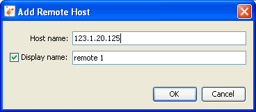
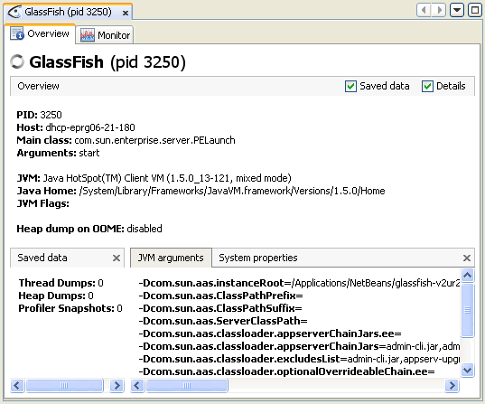

Remote 애플리케이션 활용
VisualVM은 원격호스트에서 실행중인 애플리케이션에 접근해서 데이터를 보여줄수 있다. 원격호스트에 접속 후, VisualVM은 애플리케이션 런타임 환경에 대한 일반적인 정보를 보여줄수 있고 힙메모리와 쓰레드 상태를 모니터링 할수 있다.
알림. VisualVM은 원격 애플리케이션의 모니터링 정보를 가져올 수는 있으나 원격 애플리케이션을 프로파일링할수는 없다.
원격호스트에 연결
연결된 원격호스트는 Applications창의 Remote노드아래 노드로 표기된다. 원격호스트에 접속할때, VisualVM은 하위노드로 호스트에서 실행중인 애플리케이션을 표기하고 원격 애플리케이션의 상태를 자동으로 반영한다. 애플리케이션이 중지되면 애플리케이션 노드를 제거하고 다른 애플리케이션이 실행되면 애플리케이션 노드를 추가한다.
원격호스트를 추가하기 위해서는, Applications창의 Remote노드에서 마우스 우측 버튼을 클릭한다. Add Remote Host를 선택하고 Add Remote Host창에서 호스트명과 아이피주소를 넣는다. (Remote노드 아래 나열될때 호스트를 구별하기 위해 사용할 표기이름을 명시할 수도 있다.)
알림:원격호스트에서 실행중인 애플리케이션의 정보를 가져오거나 표시하기 위해, jstatd 유틸리티를 원격호스트에서 실행할 필요가 있다. jstatd 유틸리티를 시작하기 위해, 명령창에서 jstatd 를 치자. jstatd 유틸리티는 JDK 6에 포함되어 있다. jstatd에 대해서 좀더 자세히 알고 싶으면 다음문서를 참고하자.
VisualVM이 원격호스트에 접속하면, Applications창의 Remote노드 아래 원격호스트의 노드가 표시된다. 원격호스트에서 실행중인 애플리케이션을 보기위해서 원격호스트 노드의 + 표를 열어볼 수 있다.
애플리케이션 데이터 보기
VisualVM은 실행중인 각각의 원격 애플리케이션을 메인창의 애플리케이션별 탭에서 보여준다. 애플리케이션탭을 열기 위해, Applications창의 애플리케이션 노드를 선택하고 마우스 우측버튼을 클릭하고 Open을 선택하자. (다른 방법으로는 애플리케이션 노드를 더블클릭하면 된다.) Open을 클릭하면, 메인창에 애플리케이션탭에서 Overview탭이 열린다.
애플리케이션의 세부정보를 보기 위해서는 애플리케이션탭의 하위탭을 사용할 수 있다.
좀더 자세한 정보는 다음문서를 참고하자.